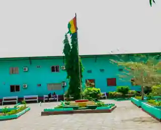

Polycopiés de cours
Cours structurés par chapitre, définitions, propriétés, démonstrations et exemples.
Consulter les coursUn cours commun de première année de Licence pour les filières Météorologie, Hydrologie, Génie de l’environnement et Gestion des Ressources Naturelles. Fonctions, dérivées, intégrales, suites et séries, Fourier et équations différentielles.

Ce site regroupe les ressources du cours d'Analyse (2MTH1 0101), enseigné par M. Bakary TRAORE aux étudiants de première année des quatre filières. Vous y trouverez le programme, les polycopiés des cours, les présentations, les travaux dirigés (TD), les corrigés des TD et des exemples appliqués aux sciences de l'environnement. Les documents sont actualisés au fil de l'enseignement.
45 heures · 15 semaines · 3 crédits · Contrôles continus et examen terminal.
Lire le programme détailléCours structurés par chapitre, définitions, propriétés, démonstrations et exemples.
Consulter les coursDiapositives du programme et des huit chapitres au format PDF.
Voir les présentationsFeuilles d’exercices pour s'entraîner progressivement.
Accéder aux TDSolutions et indications complémentaires des feuilles de TD.
Consulter les corrigésCinq séances sur tableur, R ou Python et ressources numériques.
Ouvrir les TPÉtudes illustratives en météo, hydrologie, environnement et GRN.
Explorer les applicationsManuels de référence et ressources de consultation légales.
Voir les référencesOrganisation des 45 heures, objectifs, progression et modalités.
Lire le programmeCycles thermiques, variations de pression et signaux périodiques.
Débits, précipitations cumulées, réservoirs et bilans hydriques.
Polluants, processus de traitement et phénomènes de transport.
Évolution et renouvellement de stocks, croissance biologique et prélèvements.
Enseignant chargé du cours : M. Bakary TRAORE · Code : 2MTH1 0101 · Dossier GitHub du cours. .